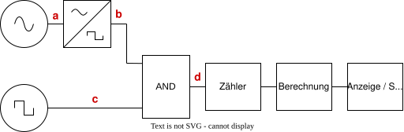
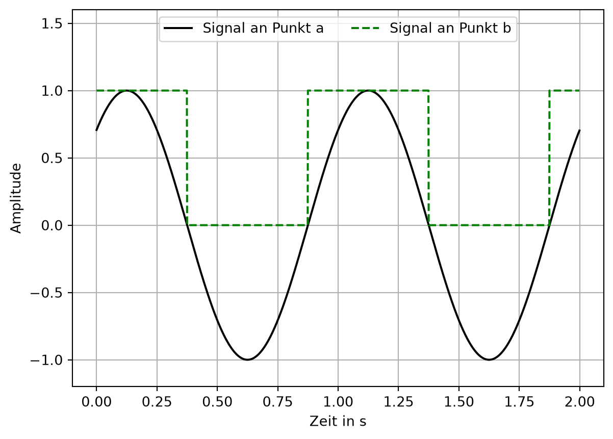
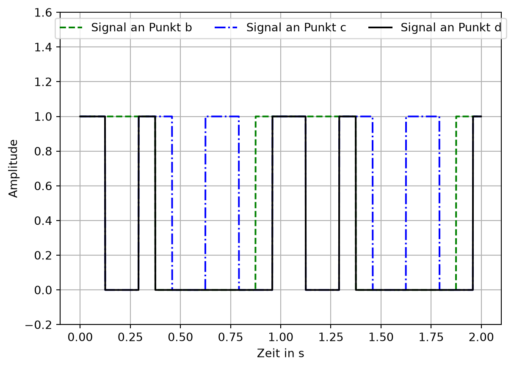

Frequenz als Zielgröße: In der Nutzsignaltechnik (z. B. Funk) muss die eingestellte Frequenz messtechnisch verifiziert werden. Beispiel WLAN 2,4 GHz: Kanal 1 sendet zwischen \(2399{,}5\,\mathrm{MHz}\) und \(2424{,}5\,\mathrm{MHz}\) — nur eine Frequenzmessung stellt sicher, dass der Kanal korrekt belegt ist.
Frequenz als Messsignal: Viele Sensoren wandeln eine physikalische Größe direkt in eine Frequenz um. Mit bekannter Wegstrecke oder Volumensmenge je Periode ergeben sich dann Geschwindigkeit und Durchfluss:
Code
f_s = MySymbol('f', description='Frequenz des Sensorsignals', unit=u.hertz)s_p = MySymbol('s', description='Weg je Periode (Sensorvertrag)', unit=u.meter)v_g = MySymbol('v', description='Geschwindigkeit', unit=u.meter/u.second)n_s = MySymbol('n_1', description='Anzahl der Perioden im Messintervall', )V_p = MySymbol('V', description='Volumen je Periode', unit=u.liter)V_g = MySymbol('V_{ges}', description='Gesamtvolumen im Messintervall', unit=u.liter)Q_f = MySymbol('Q', description='Durchfluss (Volumenstrom)', unit=u.liter/u.second)QBookHelpers.print_description([s_p, f_s, v_g, n_s, V_p, V_g, Q_f])QBookHelpers.print_equation(Eq(v_g, s_p*f_s), label='eq-geschwindigkeit-frequenz')QBookHelpers.print_equation(Eq(V_g, n_s*V_p), label='eq-volumen-frequenz')QBookHelpers.print_equation(Eq(Q_f, V_p*f_s), label='eq-durchfluss-frequenz')
\(s\) … Weg je Periode (Sensorvertrag)
\(f\) … Frequenz des Sensorsignals
\(v\) … Geschwindigkeit
\(n_{1}\) … Anzahl der Perioden im Messintervall
\(V\) … Volumen je Periode
\(V_{ges}\) … Gesamtvolumen im Messintervall
\(Q\) … Durchfluss (Volumenstrom)
\[
v = f s
\tag{5.1}\]
\[
V_{ges} = V n_{1}
\tag{5.2}\]
\[
Q = V f
\tag{5.3}\]
Wegen der einfachen Digitalisierung (Zählen statt Amplitudenmessung) sind Frequenzsignale gestörtarm über lange Leitungen übertragbar.
5.2 Periodische Signale
Ein Signal heißt periodisch, wenn es sich nach der Periodendauer \(T\) wiederholt. Das muss kein Sinussignal sein — Rechteck- oder Sägezahnsignale sind ebenfalls periodisch.
Abbildung 5.1: Sinussignal mit drei Perioden; die Periodendauer T ist über eine volle Periode markiert.
Die Einheit der Frequenz ist das Hertz (Hz) — in SI-Basiseinheiten der Kehrwert der Zeit, \(\mathrm{Hz = 1/s}\). Der Zusammenhang zwischen Frequenz und Periodendauer folgt direkt daraus:
Periodendauer und Frequenz lassen sich mit demselben Messaufbau bestimmen: Zähler plus Takt mit bekannter Periodendauer. Die Signalquelle ist symbolisch für das zu messende Signal — es muss periodisch sein, aber nicht sinusförmig.

Abbildung 5.2: Blockschaltbild der Frequenz- und Periodenmessung: Messsignal (a), Komparator (b), Takt (c), UND-Glied (d) und Zähler
Der Komparator formt das Messsignal (a) in einen impulsförmigen Pegel (b) um — ein Impuls je Periode.
Der Takt (c) liefert Impulse mit bekannter Periodendauer \(T_{q}\).
Das UND-Glied (d) verbindet beide Signale — es entscheidet, ob die Zählimpulse vom Messsignal oder vom Takt zum Zähler durchgelassen werden.
Der Zähler liefert je nach Betriebsart die Anzahl \(N\) der Signalperioden bzw. der Taktimpulse.
Code
fN =1# Frequenz in HznN =2# Anzahl der PeriodenphiN = np.pi/4# Phasenverschiebung in RadiantTN =1/fN # Periodendaueromega =2*np.pi*fN # KreisfrequenztN = np.arange(0, nN*TN, TN/1000)yN = np.sin(omega*tN + phiN)plt.plot(tN, yN, '-k', label='Signal an Punkt a')plt.plot(tN, 0.5+1/2*signal.square(2*np.pi*fN*tN + phiN), '--g', label='Signal an Punkt b')plt.grid()plt.ylim(-1.2, 1.6)plt.xlabel('Zeit in s')plt.ylabel('Amplitude')plt.legend(loc=9, ncol=2)plt.show()

Abbildung 5.3: Messsignal am Punkt a (Sinus) und Ausgang des Komparators am Punkt b (Rechteck) — ein Impuls je Periode.
Code
fN =1# Frequenz in HznN =2# Anzahl der PeriodenphiN = np.pi/4# Phasenverschiebung in RadiantTN =1/fN # Periodendaueromega =2*np.pi*fN # KreisfrequenztN = np.arange(0, nN*TN, TN/1000)sig_b =0.5+1/2*signal.square(2*np.pi*fN*tN + phiN)sig_c =0.5+1/2*signal.square(2*np.pi*fN*3*tN + phiN)plt.plot(tN, sig_b, '--g', label='Signal an Punkt b')plt.plot(tN, sig_c, '-.b', label='Signal an Punkt c')plt.plot(tN, sig_b*sig_c, '-k', label='Signal an Punkt d')plt.grid()plt.ylim(-0.2, 1.6)plt.xlabel('Zeit in s')plt.ylabel('Amplitude')plt.legend(loc=9, ncol=3)plt.show()

Abbildung 5.4: Komparatorausgang (b) und Taktsignal (c) werden am UND-Glied (d) verknüpft — nur wenn beide Pegel hoch sind, läuft ein Impuls zum Zähler.
5.4 Frequenzmessung
Bei der Frequenzmessung zählt der Zähler die Impulse des Messsignals innerhalb der Torzeit \(T_{g}\) (Öffnungsdauer des UND-Glieds):
Code
N_f = MySymbol('N', description='Anzahl der Impulse je Torzeit', )T_g = MySymbol(r'T_{g}', description='Torzeit', unit=u.second)QBookHelpers.print_equation(Eq(f_p, N_f/T_g), label='eq-frequenzmesung')
\[
f = \frac{N}{T_{g}}
\tag{5.5}\]
Mit der Torzeit \(T_{g} = 1\,\mathrm{s}\) und einem Messsignal der Frequenz \(f = 1\,\mathrm{kHz}\) ergibt sich:
Der Zähler kann nur ganzzahlige Impulse erfassen — immer der Zählstand \(\pm 1\) Impuls ist unsicher. Bei \(N = 1000\) Impulsen in \(1\,\mathrm{s}\) bedeutet das eine relative Messabweichung von \(\pm 0{,}1\,\%\) (Quantisierung, Typ-B-Bewertung nach [1]).
Durch Verlängerung der Torzeit sinkt der relative Zählfehler, dafür dauert die Messung länger.
5.5 Periodendauermessung
Bei der Periodendauermessung tauscht man die Rollen: Das Messsignal öffnet das Tor für eine Periode, und der Zähler zählt die Taktimpulse innerhalb dieser Periode:
Code
T_q = MySymbol(r'T_{q}', description='Periodendauer des Taktsignals', unit=u.second)N_q = MySymbol(r'N_{q}', description='Anzahl der Taktimpulse je Signalperiode', )QBookHelpers.print_equation(Eq(T_p, N_q*T_q), label='eq-periodenmessung')
\[
T = N_{q} T_{q}
\tag{5.8}\]
Mit einer Taktfrequenz von \(f_{q} = 1\,\mathrm{MHz}\) und einem Messsignal \(f = 1\,\mathrm{kHz}\) ergibt sich:
Code
T_q_v = MySymbol(r'T_{q}', description='Periodendauer des Taktsignals', unit=u.second, value=1e-6)QBookHelpers.print_values([T_q_v])QBookHelpers.print_equation(Eq(N_q, 1000), label='eq-n-periodenmessung')T_p_v = MySymbol('T', description='Periodendauer des Messsignals', unit=u.second, value=1e-3)QBookHelpers.print_values([T_p_v])
Auch hier ist der Zählstand \(\pm 1\) Taktimpuls unsicher. Je mehr Taktimpulse \(N_{q}\) innerhalb einer Periode gezählt werden, desto geringer ist die relative Messabweichung.
Bei niedrigen Frequenzen wächst die Anzahl \(N_{q}\) der Taktimpulse je Periode — die Periodendauermessung ist daher für niedrige Frequenzen genauer.
5.6 Zusammenspiel Frequenz/Periode
Messverfahren
Zähler zählt
Vorteil
Nachteil
Frequenzmessung
Perioden des Messsignals in fester Torzeit
schnell, gut für hohe Frequenzen
ungünstig bei niedrigen Frequenzen (\(N\) klein)
Periodendauermessung
Taktimpulse je Signalperiode
günstig bei niedrigen Frequenzen
lange Messzeit bei niedrigen Frequenzen (je Messwert)
Platzhalter — Messgerätefoto: Frequenzzähler/Oszillator-Baugruppe mit sichtbarem Taktquarz und Zähler-IC, um den Messaufbau (Abbildung 5.2) mit realer Schaltungstechnik zu verbinden.